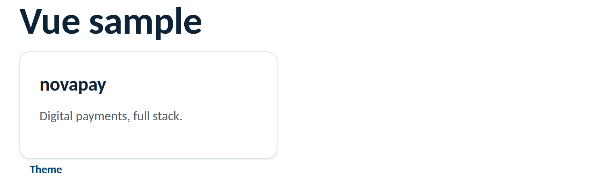

Frameworks
Vue single-file components use the kit's classes directly in templates. Import the
stylesheet once in main.js; scoped styles coexist cleanly because the
kit's classes are global and its tokens are CSS variables.
npm install novus-design-kit// main.js
import "novus-design-kit/js/novus-theme.js";
import "novus-design-kit/tokens.css";
import { createApp } from "vue";
import App from "./App.vue";
createApp(App).mount("#app");<script setup>
defineProps(["title", "summary"]);
const emit = defineEmits(["open"]);
const toggleTheme = () => window.novusTheme.toggle();
</script>
<template>
<div class="card card--interactive" style="position: relative">
<h3>{{ title }}</h3>
<p class="muted">{{ summary }}</p>
<button class="card-trigger" :aria-label="`Open ${title}`" @click="emit('open')" />
</div>
<button class="btn btn--ghost btn--sm" @click="toggleTheme">Theme</button>
</template><style scoped>
.detail {
padding: var(--space-4);
border-top: 1px solid var(--border);
color: var(--text-secondary);
}
</style>Rendered from this guide's own sample project, executed and verified on 2026-08-26 against vue 3.5 on vite 8.

:deep() needed to use them inside scoped components.var(--…) tokens; never re-declare a value the tokens define.main.js so the persisted choice applies as early as possible.